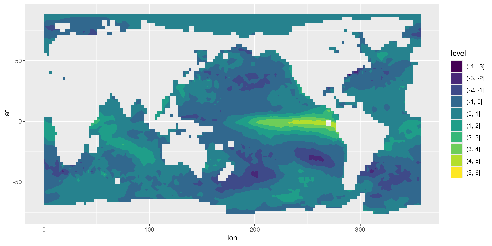

Read, manipulate and plot gridded data with metR
Open the World with Open Source, WOMBAT 2024
Elio Campitelli
Monash University
Reading data
We are going to use ERA5 data, which is weather data on a regular grid. The data is in a NetCDF file.
We can read one variable with ReadNetCDF()
By default, the result is a data.table.
time lat lon sst
<POSc> <num> <num> <num>
1: 1980-01-01 -76.25 165.0 271.6997
2: 1980-01-01 -76.25 167.5 272.1290
3: 1980-01-01 -76.25 170.0 272.8590
4: 1980-01-01 -76.25 172.5 272.6795
5: 1980-01-01 -76.25 175.0 272.5256
---
3409292: 2023-12-01 88.75 347.5 271.4602
3409293: 2023-12-01 88.75 350.0 271.4602
3409294: 2023-12-01 88.75 352.5 271.4602
3409295: 2023-12-01 88.75 355.0 271.4602
3409296: 2023-12-01 88.75 357.5 271.4602Plotting data
We can take a look at one slice of the data by subsetting the first time and plotting with geom_contour_fill()

Where’s the zero?

sst |>
_[time == as.POSIXct("1998-01-01")] |>
ggplot(aes(lon, lat)) +
geom_contour_fill(aes(z = sst_a, fill = after_stat(level)),
breaks = AnchorBreaks(anchor = 0, exclude = 0)) +
metR::geom_contour_tanaka(aes(z = sst_a),
breaks = AnchorBreaks(anchor = 0, exclude = 0)) +
scale_fill_divergent_discretised()
Transforming data
We can compute the EOFs of SST with the EOF()
time PC sst_a
<POSc> <ord> <num>
1: 1980-01-01 PC1 -0.019252316
2: 1980-02-01 PC1 -0.007689172
3: 1980-03-01 PC1 -0.005731776
4: 1980-04-01 PC1 -0.008607639
5: 1980-05-01 PC1 -0.001143759
---
5276: 2023-08-01 PC10 0.035440127
5277: 2023-09-01 PC10 0.065182685
5278: 2023-10-01 PC10 0.036879878
5279: 2023-11-01 PC10 -0.008752136
5280: 2023-12-01 PC10 -0.031711463 lon lat PC sst_a
<num> <num> <ord> <num>
1: 150.0 -8.75 PC1 0.02017407
2: 152.5 -8.75 PC1 0.01678406
3: 155.0 -8.75 PC1 0.01752412
4: 157.5 -8.75 PC1 0.01821094
5: 160.0 -8.75 PC1 0.01008606
---
4146: 265.0 8.75 PC10 0.03777417
4147: 267.5 8.75 PC10 0.09978071
4148: 270.0 8.75 PC10 0.16587637
4149: 272.5 8.75 PC10 0.09926842
4150: 275.0 8.75 PC10 0.02879130Quick look with screeplot():
Analyse data
How does ENSO affect the atmosphere?
Is there a relationship between ENSO and atmospheric circulation and rain around South America?
So first read the variables
----- Variables -----
z:
Geopotential in m**2 s**-2
Dimensions: lon by lat by level by time
tp:
Total precipitation in m
Dimensions: lon by lat by time
----- Dimensions -----
time: 528 values from 1980-01-01 to 2023-12-01
lon: 360 values from 0 to 359 degrees_east
lat: 180 values from -89.5 to 89.5 degrees_north
level: 3 values from 200 to 850 millibarsReshape into long and compute anomalies.
era5_vars <- era5_vars |>
dt_pivot_longer(cols = z:pp) |>
_[, value_a := value - mean(value), by = .(lon, lat, month(time), name)]
head(era5_vars) time level lat lon name value value_a
<POSc> <int> <num> <num> <char> <num> <num>
1: 1980-01-01 500 -89.5 180 z 50311.02 61.91504
2: 1980-01-01 500 -89.5 181 z 50311.02 62.04288
3: 1980-01-01 500 -89.5 182 z 50311.02 62.17072
4: 1980-01-01 500 -89.5 183 z 50311.02 62.28738
5: 1980-01-01 500 -89.5 184 z 50311.02 62.39284
6: 1980-01-01 500 -89.5 185 z 50311.02 62.49822Join data and EOFs
for_regression <- cut(sst_eofs, 1:2)$left |>
dt_pivot_wider(names_from = PC, values_from = sst_a) |>
merge(era5_vars)
for_regressionKey: <time>
time PC1 PC2 level lat lon name
<POSc> <num> <num> <int> <num> <num> <char>
1: 1980-01-01 0.02021858 -0.03311131 500 -89.5 180 z
2: 1980-01-01 0.02021858 -0.03311131 500 -89.5 181 z
3: 1980-01-01 0.02021858 -0.03311131 500 -89.5 182 z
4: 1980-01-01 0.02021858 -0.03311131 500 -89.5 183 z
5: 1980-01-01 0.02021858 -0.03311131 500 -89.5 184 z
---
15206396: 2023-12-01 -0.08664352 -0.06273200 500 -10.5 355 pp
15206397: 2023-12-01 -0.08664352 -0.06273200 500 -10.5 356 pp
15206398: 2023-12-01 -0.08664352 -0.06273200 500 -10.5 357 pp
15206399: 2023-12-01 -0.08664352 -0.06273200 500 -10.5 358 pp
15206400: 2023-12-01 -0.08664352 -0.06273200 500 -10.5 359 pp
value value_a
<num> <num>
1: 5.031102e+04 6.191504e+01
2: 5.031102e+04 6.204288e+01
3: 5.031102e+04 6.217072e+01
4: 5.031102e+04 6.228738e+01
5: 5.031102e+04 6.239284e+01
---
15206396: 4.284156e-04 1.182178e-04
15206397: 4.273526e-04 1.400348e-04
15206398: 3.901453e-04 1.278820e-04
15206399: 3.391181e-04 9.659404e-05
15206400: 3.008477e-04 6.760133e-05Compute linear regression
lon lat season name term estimate
<num> <num> <fctr> <char> <char> <num>
1: 180 -89.5 DJF z (Intercept) -9.751149e-13
2: 180 -89.5 DJF z PC1 -3.185336e+02
3: 180 -89.5 DJF z PC2 -2.215233e+03
4: 181 -89.5 DJF z (Intercept) -3.168992e-12
5: 181 -89.5 DJF z PC1 -3.195499e+02
---
345596: 358 -10.5 SON pp PC1 1.095372e-04
345597: 358 -10.5 SON pp PC2 8.427022e-05
345598: 359 -10.5 SON pp (Intercept) 4.667631e-21
345599: 359 -10.5 SON pp PC1 6.628679e-05
345600: 359 -10.5 SON pp PC2 2.318171e-05regression_spring |>
ggplot(aes(lon, lat)) +
geom_contour_fill(aes(z = pp)) +
geom_streamline(aes(dx = dlon , dy = dlat,
linewidth = after_stat(step^4)),
arrow = NULL, lineend = "round",
skip = 5, L = 30) +
scale_linewidth(range = c(0.01, 0.6), guide = "none") +
geom_topo +
scale_fill_divergent() +
facet_wrap(~term, ncol = 1)regression_spring |>
ggplot(aes(lon, lat)) +
geom_contour_fill(aes(z = pp, fill = after_stat(level)),
breaks = AnchorBreaks(0, exclude = 0)) +
geom_streamline(aes(dx = dlon , dy = dlat,
linewidth = after_stat(step^4)),
arrow = NULL, lineend = "round",
skip = 5, L = 30) +
scale_linewidth(range = c(0.01, 0.6), guide = "none") +
geom_topo +
scale_fill_divergent_discretised(low = scales::muted("orange"),
high = scales::muted("green")) +
facet_wrap(~term, ncol = 2) +
metR::scale_x_longitude() +
metR::scale_y_latitude() +
coord_quickmap()Thanks!
eliocamp.github.io/slides/wombat2024